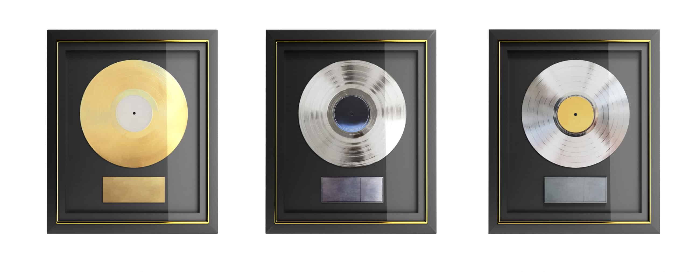
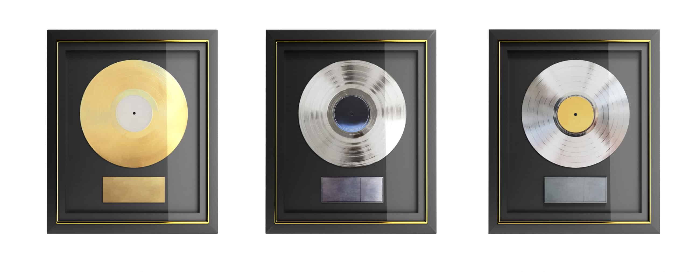

Liste des pistes
- Humanoïde
- Mauvaise graine
- Squa
- Réalité augmenté
- Avant tu riais (Ft.Clara Luciani)
- Esquimaux (Ft.Népal)
- O.D (Ft.Murkage Dave)
- Vinyle (Ft. Alpha Wann)
- Saturne (Ft. Sneazzy & S.Pri Noir)
- Galatée
- Le regard des gens (Ft. 2zer, Doums, Mekra & Nemir)
- Programmé
- Besoin de sens (Ft. Framal & Jazzy Bazz)
- Nekketsu (Ft. Crystal Kay)
"Cyborg" est le second album studio de Nekfeu, sorti de manière surprise le 1er décembre 2016 lors d'un concert à l'AccorHotels Arena. Cet album représente une évolution significative dans la sonorité et la complexité des thèmes abordés par l'artiste. Avec "Cyborg", Nekfeu se détache des conventions et explore de nouveaux horizons musicaux, intégrant des éléments de musique électronique et de trap, tout en restant fidèle à son style lyrique. Les thèmes sont variés et souvent introspectifs, touchant à la solitude ("Vinyle"), à la quête de sens ("Humanoïde"), ou encore à l'amour complexe ("Saturne"). Le projet regorge de titres puissants qui dévoilent une facette plus expérimentale et personnelle de l'artiste. L'absence de promotion et de singles avant la sortie de l'album a ajouté un élément de mystère et a prouvé que Nekfeu pouvait compter sur sa fanbase solide. La réception de "Cyborg" a été très positive, l'album ayant été certifié disque de platine en seulement trois semaines après sa sortie. Il a consolidé la place de Nekfeu dans le paysage du rap français comme un artiste innovant et audacieux.